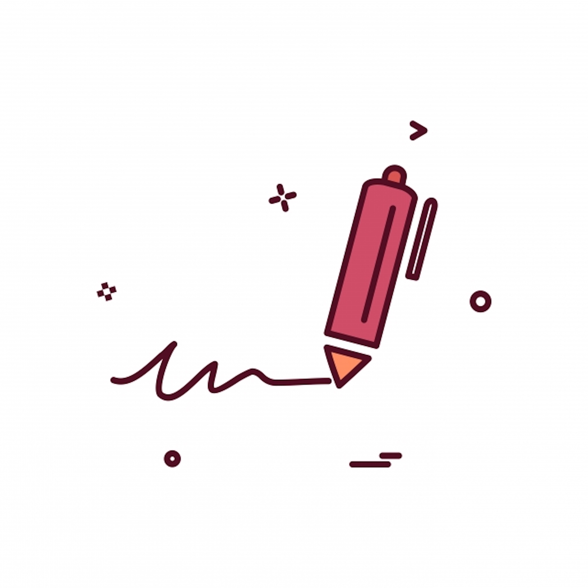

Associate Intern @ an Health Innovation Startup
In Winter 2020, I finished my second co op term at Colleaga, an innovation collaboration Startup. I worked as a Project Technology Coordinator. I helped assist the product manager with most tasks and was able to make meaningful contributions to a Mental Health Initiative.
During my co-op experience, I was able to draft a product roadmap for a web-based online collaboration tool, translated it by writing 50+ user stories, functional requirements, user specs, and technical documentation on JIRA. I Drove a $900,000 project by defining business requirements, key metrics and KPIS and performing data analysis on user usage to propose new product decisions.
I also developed product design by building wireframes, specifications, UI/UX mockups, screen flows and clickable prototypes using Invision for development build I was also kept busy performing A/B tests to understand client pain points, prioritizing user needs and researching various technologies to shape product strategy. I also created and performed end to end tests for the user interface, defined technical and UI/UX bugs, communicated defects to the development team in an agile delivery model. Working at Colleaga was a experience filled with learning, some of the skills I got to pick up on was time management and learning to product management in a lean startup.